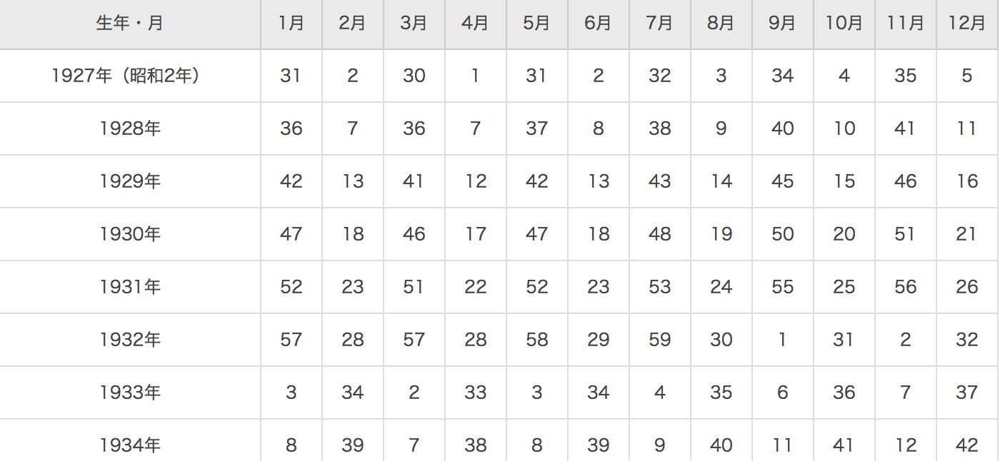
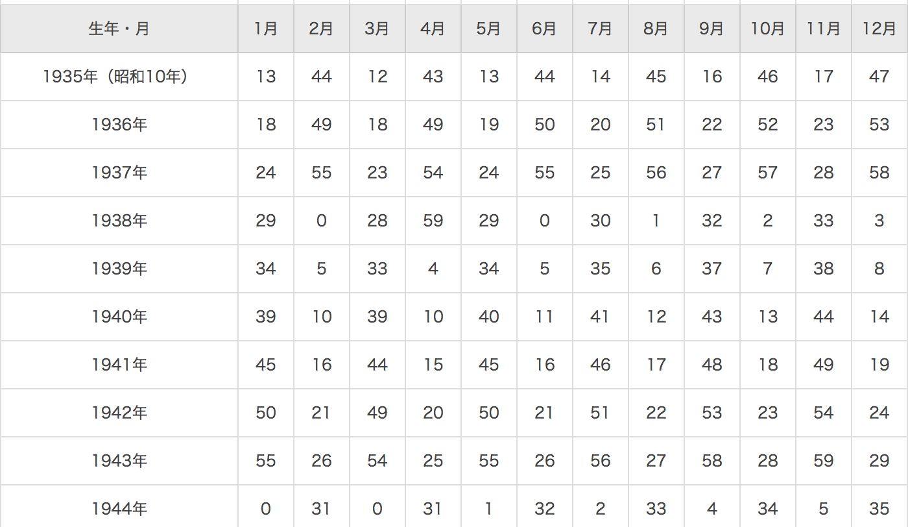

| １年飛躍的に活躍できる方程式: 2月３日運命はかわる | |
| 仲秋素志 | |
| (2017) | |
運命の歯車、あなたはその歯車にあった歯車を持っていますか？占いというと、軽くみられることが多いですがこの本は単なる占いの本ではないあなたの力が最大限発揮でき、自然の力を味方にすることで今年１年を飛躍的に活躍できるものとする行動エネルギーにかえる本である。そして実際に行動に移するにはどうしたらよいのか？についても書かれた本である
はじめに
「どうせ占いなんでしょ？」
そうあなたは、思ったかもしれない。
では逆に質問、
あなたは、普段、どのように考え行動し
うまくいったり、行かなかったりしているのだろうか？
世にあるいろんな成功哲学
これらはすべて、先人たちの体験・経験則
そして、膨大な数の、統計から
どうやったらうまくいくのか？うまくいかないのかのデータを集めたもの。
なにがいいたいのか？
実は占いも全く同じ、膨大な数の経験、
統計
なのだ。
しかも、その数は今、世にある、成功法則の比にならない
ほどの統計的データをもとにしている。
そして、私は、成功するかしないかはこれで決まると思っている
「努力 x センス」
この掛け算がうまくいかないか組み合わせも重要だ。
これは、あるものに似ている
そう 歯車 だ、組み合わせがうまくいかなければ
歯車はうまくうごかない、そればかりか停止してしまう
努力とは、自分自信の経験
そしてセンスとは、 運命 のことだ。
運命とは、つまり生まれ持った才能、自分では変えることのできないものだ。
ここであの有名な画家ピカソの話をしよう
ピカソといえば、他の画家にはない奇抜な絵で名が知られている
しかし、実は、そういう絵ばかりではない。
彫刻家でもあることをご存知だろうか？
ピカソのすごいところは、あの奇抜な絵だけではなく
実は作品数の数が他の画家とは違う郡を抜いているところ
なんと１５万点、この数字、ちょっとわかりにくいかもしれない。
例えば、世界的に有名ないフランスのルーブル美術館は約３万点
ルーブル美術館といえば、１日でもすべての作品をみることができないひろさと作品集と言われている、この数をはるかに超える数を
実はピカソは生涯で作り上げたのだ。
たまたま、奇抜な絵が目立っただけのこと
そう、これが努力の部分である。
ではセンスってなんだ、実はこれが占いにおける醍醐味なのだ。
これによって、あなたの運命が変わる。
この本は、あなたの運命を１８０度変える可能性を秘めている
なぜなら。あなたが持っているセンスが最高のものだからだ。
そして、それを導く最大化し、導く指針となるもの
そして数をこなしていくことで、ピカソ以上の存在になれる
その可能性を秘めたものこそが
占いだからだ。
世の中の占いに足りないもの
それは、行動に対する決断そして、目標を決めるという決意でもある。
多くの占いは将来あなたの未来はこうだといって安心させる方向が主である。
でもそれでは現実は変わらない、なぜならさっきいったとおり「努力 x センス」だからだ。
この努力というものがない。だから待てどくらせど運命なんてかわらない。
占いとは、当たる当たらないではなく、その結果をもとに
あなたがどう考えてどう行動するのか？
統計的なデータを信じて勇気を持って行動するかどうかで変わってしまう。
この本では、そのあなたにあった行動の決め方までアドバイスをする。
世の中にある占いとは違い、本当に叶えるための占いとも言える
この本はそれを最大化する仕組みがある。
さあ、ワクワクしながら、運命の扉を開こう
２月３日に運命はかわる
２月３日と言えば、節分、なぜ節分というのか、それは節目だからだ。
なんの節目か？それは年の節目
正確にいうと、ここからが本来の２０１７年、旧暦だ。
ここから、春となっている。しかたがって、ここから本来の干支がかわる。
２０１７年は申から酉にかわるのだ。
ここで自然のエネルギーもかわる
そして正確にいうと、酉ではなく、丁酉（ひのととり）という。
これがなにを示しているのかについては後ほど
お伝えする。
センス
センスを最大化させる２つの方法がある。その方法が次のものだ。
ネガティブパワー
こんな言葉を言ったことはないだろうか？
「私にはセンスがない」
誰もが一度は言わずとも考えたことがある言葉である。
こんな言葉を、発したとき、なぜこの言葉を言ったのであろうか？
例えば「周りからダサいと言われた」
「学校の授業で、最下位だった」
たしかに言葉をもらったという事実が事実かもしれない
しかし、そのときに「どうせダメなんだ」と決めたのは誰だろうか？
評価というのは、なにかと比較したときに起こりやすい。
多くの人がやってしまうのは、人と比べたときだ。
でもかんがえてもらいたい、この評価、ひょっとしたら違う人がみたら
才能だと思う人もいるかもしれない。
例えば、こんな人はいただろうか？
マラソンが苦手で、いつもビリ。俺って、走るの得意じゃないし
いつもビリだ、俺って才能ないなあ・・・
とんでもない！！
マラソンがビリ、これは、まさに大会のときに目立つことができる ヒーロ ではないか？
もちろんこれをわざとやるというのはダメであるが、みんなから応援されるヒーローとなるのだ。
もうひとつ、これを努力して乗り越えたとき、そこにギャップがうまれる、これは少し時間がかかるが、小学生のとき、ビリだったけれど、なんと、オリンピックにでるようになった。
そして、オリンピックのとき、実は小学生のとき、いつもビリで涙を流しながら頑張った。というストーリーを聞いたら、現在ビリで涙を流している人に勇気を与え、あなたのファンになってくれる可能性を秘めている。
これは ネガティブをギャップという方法 で変える方法だ。
ポジティブパワー
では、ネガティブパワー と対称的なもの、
それがポジティブパワー 、これはなにかというと、生まれたときにおける環境が左右している。
例えば、お金持ちで、穏やかな家庭に生まれたとする、すると、穏やかな精神が自然と身につく。これは、周りの環境をみて、育つからだ。
逆に、お金がない家においてもポジティブに考えると、がまん強い性格がみにつくことが多い。両親ががまん強いからそれをみて育つからだ。
お金がないことがネガティブにみえる理由は、ほかの環境を目にしたときだけだ。なんであの家は、高いものが食べられる？買ってもらえる？多くは、嫉妬からくるものだ。
人間というのは、五感で情報を得る、主なものが視覚、そして次の聴覚を使って情報を処理する。
だから、こそ、同じ性格な人間はいない。
兄弟でさえも違うが、似てくるのは同じ生活をしているからだ
これと同じように、生まれた季節、場所、などにも影響を受ける。
例えば、春に生まれたとする。
春といえば人間の本能は、これから、冬眠が終わり、活発に動きだす準備、もしくはエネルギーの放出時期だ。
草木も一斉に、目をだす。
そんな時期に生まれてくる子供というのは、同じようなエレルギーを持っている。
周りに同調するかのように、周りがこれから、活発にうごいていたり、エネルギーに満ち溢れた世界をみているために向上心が強い心を最初に手に入れることができているのだ。
これが基準となり、１年がすぎていくため、冬になると、おちこんだりとてもエネルギーがおちてしまうように感じてしまう。
こういう感じで、実は個々にあった生まれ持った体質（センス）が違う のだ。
非常識な占い
私がやる占いは、あなたの体質との掛け合わせ、自分の強みの発見、あなたの活動力を最大化していくもの。
「なんだか怪しいな？」
そんな風に思ったかもしれない
しかし、おちついて考えてみてほしい。
あなたが、今の体を作っているのはなんだろうか？
骨、筋肉、皮膚、髪の毛など、最初に与えられたのは確かに両親からだ。
しかし、あとから作ったものは、ほかの誰でもなくあなたなのだ。
そして、それはどうやって作られたのか。それはあなたの食したもの、排泄をした結果、なにを体に取り入れて排泄したのか、そして、あなたが運動したりして、体を動かした結果のはず。
これらによって、同時に生まれた双子でさえ、性格や体格などが違ってくる。
特徴がでてくるのだ。
つまり、あなたの体というのは、当然だが
「先天的なもの」＋「後天的なもの」
から作られているということ。
この組み合わせで今のあなたが作られている。
「後天的なもの」はもう少しわけると「過去のもの」「未来のもの」 とある。
このうち変えることができるのは「未来のもの」だけ。
「先天的なもの」「過去のもの」についてはタイムマシンでも所有していないかぎり変えることができない。
ここでもうひとつ大事なのは。あなたがどのベクトルを進んでいるのかということ。
先天的な力というのは、死ぬまでに永遠とある。
親から受け取った基盤というのは永遠になくならないのだ。
それはまるでそのベクトル方向に、自然と足が向いて
人よりも２歩も３歩も大股で進むことができる能力のようなものである。
後天的なものというのは、訓練や習慣で、歩幅を変えることは可能だが
その訓練を継続できなかったりすれば衰えるものである。
私は占いの本質は、自分の特性をしって、どう行動するとうまくいくのかどうかを導くもの、これはコンサルのようなものだと思っている
今、あなた状態をしり、あなたの特徴を知り、
その上で、あなたが望む未来を掴むにはどうしたらいいのか？を
統計的データをみてアドバイスをする。
その状態こそ、体の状態に現れているということだ、なぜなら、先天的データ、後天的データは、体というメモリー媒体に記録されているからだ。
その特徴をしっかりとみる術がある、それをこれから紹介していこう。
凸と凹
あなたが、どうなりたいのか？によって強化するのか補うのかがわかれる。今よりもっと幸せになりたいだけでは漠然としている、なぜなら、幸せというのは人によって定義が違う。
結婚が幸せなのか？お金があることが幸せなのか？健康的な状態が幸せなのか様々である。
占いだって、テーマがなければ、占うことはできない。
例えば、同じタロットをつかったって、テーマによって表現するものが違ってくる。
私がおすすめする像は、尖っている部分をつくること、そのためには、やはりあらかじめ、先天の能力を最大化させるのが最も早い、でも逆に、凹んだ部分をとがらせるのもひとつの方法。そうなるとギャップがうまれて、目立ちやすい。
さあ、あなたはどの部分を尖らす？
まずは、あなたが、親から、そして地球から与えられたエネルギーからみていこう
その前に、最初に歯車の話をした、実は歯車には大きく分けて５つの種類がある、その種類を紹介しておこう。
５つの歯車の種類
これは中国の陰陽五行思想からきているものであるが、その５つとは
「木」「火」「土」「金」「水」のこと。
木のような性質、火のような性質、土のような性質、金属のような性質、水のような性質、特徴を示したものということである。
詳しい図は次のような相関図もある。のちに相性や組み合わせでも、でてくる。
詳しい性質や特徴は、次の項目で説明していく。
生まれたときのオンリーワンエネルギー
あなたが最初は、あなたのオンリーワンのエネルギーで活躍するのが近道だ。
先天的なエネルギーは何度も伝えているとおり、うまれたときに親、そして地球のエネルギーから得たもの。
それを５つのエレメント、そして２つのベクトルから判断する。
それをみていこう
これから数字を計算していく
①下記の自分の生まれた年と月の交差する数字を探す
表１
 
②でた数字に、生まれた日数を足す
数字が６０を超えた場合は６０を引いて下一桁の数字を出す
③でた数字が以下の表のどこにあたるか確認
１と２の場合：木
３と４の場合：火
５と６の場合：土
７と８の場合：金
９と０の場合：水
木のエネルギー

木のエネルギーを持って生まれたあなたは
行動力が素晴らしい、決断力そして、拡大していく能力にたけている。
リーダーとしての才能に満ち溢れた、エネルギーをうまれつきもっている。
行動にシャープさをもっていて必要なもの、不必要なものの判断をつけるのが得意。
そして、踏まれても雑草のように立ち上がる根性ももっている。
また周りとの調和も大事にすることができ、ともに行動する仲間を作るのが得意。
仲間に恵まれる才能があるのも このエネルギーのため。
簡単にいうと以下のような才能がある
- 温厚で静か
- 他人をはぐくみ、育てる
- 知識欲が旺盛
-
少々の逆境にも立ち向かえる精神力がある
（チャレンジ精神がある） - 友人関係などネットワーク構築に長ける
- 挫折しても、そこから立ち直り、成長することができる
- 基礎がしっかりとしている
- ゆっくり、着実に成長することができる
-
独立開業する人が多い
このエネルギーを上手に使って、あなたの才能（センス）を輝かせるには、あなの向上心、そして決断力、失敗しても這い上がる力を認めてもらう。
どんな失敗をしてもまけずにトライし続けること、そうすれば、それを見た人が、あの人も頑張っていると勇気をもらう。
そのためには、自分の過去を恥ずかしがらずに、ダメ人間だったことをオープンすることが必要。
そうすれば、あんなダメだったといってる人が、今は、こうなら私にもって思って勇気を持ってもらえるのだ。
火のエネルギー
火のエネルギーをもって生まれたあなたは
炎のように情熱的な、勢いのある人。人情深く、やると決めたときに行動するエネルギーがある。一方人によっては、その、炎は、燃え尽きても、炭火のように残っていて、周りの人々の心を温める、優しい温かさも持っている。
簡単にいうと以下のような才能がある
- 明るく、活発 、情熱的で、魅力的
- 感情がくるくるかわりやすいし、出しやすい
- 闘争に打ち勝つエネルギーを持つ
- 一瞬の集中力、ひらめきがある。
- 発案、アイディア作りに長ける
- まわりを巻き込んで行動するのが得意
- 楽しいことが大好き
- 叱られたり怒られたりしてもあまり後を引かない開放的な性格
-
リーダー的存在
このエネルギーを、活用する方法は、あなたがスターのように輝くことだ。誰よりも先に行動し、人よりも目立つこと。
そうすることで、あなたは、注目される存在になり、そのスター性に憧れる人があつまるようになる。
好奇心も旺盛なため、ブレーキを踏まず進むことができるのも大きな特徴
そしてその、炎の温かみに触れた人が、あなたをもっと輝かせるものになる。
土のエネルギー
土のエネルギーを持って生まれたあなたは
いろいろなものを吸収することができる能力が高い。情報収集そして、必要なものを識別し、整理することも得意。またその情報を凝縮して、端的にすることも得意。
そして、なによりも相手の話を聞くことを得意とし、それを自分の力にかえる能力を秘めている。
正直でコツコツと努力を重ねて取り組む継続することも大の得意だ。
簡単にまとめると以下の長所がある
- どんなものでも受け入れる
- 冷静沈着、あまり動じずふだんはとてもおとなしい
- 人の長所を見つけるのが得意（人間ウォッチングがすき）
- 相手に同調しやすい
- 優しい 、おちついている （安心感をあたえる）
- 気が強く芯がしっかりしている
- 環境適応能力も割りと高く、好き嫌いがない
- 世話好きで、母親的存在
- 目立たず地味だが、なぜか人を集めるオーラがある
そんなあなたが、活躍できるステージそれは、相手のことを聞き入れる数を増やし、いろんな人の口こみを待つということ。いわゆる、ヒーローは遅れてやってくるといった感じだ。
自分はすごいというタイプではないので、周りから持ち上げられて活躍することが一番の近道、そのために、自分を必要としてくれる人をさがし、先に施しを与えることが重要。
その施しがいずれ大きなものとなって帰ってくるのだ、そして本人が気づかぬない間に、ヒーローになっている。
金のエネルギー
金のエネルギーを持ってうまれたあなたは
金属のようにキラキラ輝いているエネルギーが高い、きらびやかな世界が大好き。
そしてときに金属は堅いので、攻撃的にも保守的にも、万能なものだ。
まわりから、ちやほやされるのもなれていて得意。そしてきれい好きでもある。
また、持ち前の明るい性格もあるので、人を明るく励ますのも得意。
さらに、冷静な一面もあり、客観的にいろんなものをみる能力も持っている。
簡単にいうと以下の長所がある。
- しっかりしている
- 白黒はっきりつける、竹をわったようなさっぱりとした性格
- 強く、鋭く、隙がない
- きっちり正確
- 目標をもつと一直線に努力する
- 自分の意見がしっかりしている
- 規律に従う 、真面目
- 非現実的な考え方をするし、なんでもこなす働きもの
このエネルギーを有効にしていくには、やはりまわりか ちやほやされること、そのためには目立った服装、際立った色使い、異端児かと思われるくらいがちょうどいい、なぜなら、それがここちよいと自分でも感じるからだ
ここちよい＝無意識に取り組むもの。
芸能人で言えば、小林幸子や美川憲一のように、とにかく派手、でもこういうことをするからファンもいる。
全員に好かれる必要は全くないのである。
水のエネルギー
水のエネルギーを持ってうまれたあなたは
定在適所、水のようにしなやかに、形を変えて、対応することができる器用なことができる才能がある。
また時に、いきよいよく行動することもできたり、行動力もある。
いろんな場所で八方美人ができる、人に合わせることができる特徴がある。
簡単にいうと以下の長所がある
- どんな状況にも瞬間的に順応できる
- 人をおちつかせたり、なだめたりするのが得意
- ストレスをしょいこまない
- 人間関係をスムーズにする
- 洗練されている
- 心が広い
- ポイントをおさえるのがうまい
- 手際がよい
- 周囲からはお利口で要領の良い人だとおもわれているかも
- 雑学・うんちくが大好き
そんな能力を最大限発揮できる、それは、相手のペースに合わせて自分のペースに巻き込むことだ、しらない間に相手から自分のペースに巻き込み交渉などをすることが才能の開花のヒントでもある。
また１対１だけでなく １対多数でも、その能力は発揮できる。
１回自分のペースに巻き込んだら、勢いよく行動したり、その人の意思を固めるのも得意なため、カウンセリングやコーチングにも向いている。
あなたが作ったオンリーワンエネルギー
後天的エネルギーの状態つまり現在の状態だ。
そのデータはどこにあるのか？それは体にある。
なぜ、そんなことがいえるのか？それは、あなたがいままで蓄積したのは、食べ物のエネルギー、そして行動して得られた結果だからだ。
あなたはひょっとしたら意識していないかもしれない、しかし、無意識に過剰にとった行動の結果が多いほど、結果として現れている。
それが体にでているということだ。
ただ体にでている症状というものは、ネガティブなものとなって現れていることが多い、調子がいい部分というのは、自分ではわからないからだ。
そして、人間というものはバランスをとろうとして、症状としてでてくる、気がついてほしいからだ。
だから決して、悪いことではないということを覚えてほいてほしい。
次の項目をチェックしてもらいたい。（症状の部分は最近症状がでているというより、昔から症状がでやすいという感覚でチェック）
チェック表
木のエレメントチェック
⬜ ︎ イライラすることが多い
⬜ ︎ よく現実的な夢をみる
⬜ ︎ 目が疲れやすい
⬜ ︎ 爪がもろい
⬜ ︎ 不眠
⬜ ︎ 肩こり、頭痛が慢性化している
⬜ ︎ 貧血やめまいがおこりやすい
⬜ ︎ 生理不順、生理痛がある
⬜ ︎ 酸っぱいものが好き
⬜ ︎ 足がつりやすい
火のエレメントチェック
⬜ ︎ 悪夢、非現実的な夢をよくみる
⬜ ︎ コーヒーや苦いものが好き
⬜ ︎ 動悸がする
⬜ ︎ 血圧に問題がある
⬜ ︎ 子供のように喜ぶことが多い
⬜ ︎ 舌のトラブルが多い
⬜ ︎ 舌先が赤い
⬜ ︎ 早口
⬜ ︎ 眼が覚めることが多い
⬜ ︎ 夏になると調子が悪くなる
土の エレメントチェック
⬜ ︎ 胃腸が弱い
⬜ ︎ 口角が荒れやすい
⬜ ︎ むくみが気になる
⬜ ︎ 考えることが多い
⬜ ︎ 疲れやすい
⬜ ︎ 生理がだらだら続く
⬜ ︎ 下痢や便秘をすることが多い
⬜ ︎ 甘いものが好き
⬜ ︎ 雨の日に体調を崩すことが多い
⬜ ︎ 乗り物酔いをすることが多い
金の エレメントチェック
⬜ ︎ 咳や痰、呼吸器関係が弱い
⬜ ︎ 乾燥肌など皮膚が荒れやすい
⬜ ︎ 便秘気味
⬜ ︎ 悲観的になることが多い
⬜ ︎ 慢性の鼻炎傾向
⬜ ︎ 辛いものが好き
⬜ ︎ 秋の季節になると調子が悪くなる
⬜ ︎ 運動もしていないのに汗をかきやすい
⬜ ︎ どちらかというと色白
⬜ ︎ 悲しい映画やドラマをよくみる
水の エレメントチェック
⬜ ︎ 足腰が弱い
⬜ ︎ 白髪や抜け毛が多い
⬜ ︎ 耳鳴りがすることが多い
⬜ ︎ 骨が多い
⬜ ︎ 手足が冷えるかほてる
⬜ ︎ 歯が弱い
⬜ ︎ 塩辛いものが好き
⬜ ︎ トイレの回数が１日１０回以上
⬜ ︎ 冬になると調子が悪くなる
⬜ よく驚くことが多い
合計を出す
木 点
火 点
土 点
金 点
水 点
上記のエレメントで、一番点数が高いところはどこだろうか？
一見症状がでているから弱いのではないか？と思うかもしれないが
それがあなたの一番強みとなる部分である。
なぜならあなたが無意識に行動を起こした結果
つまりそれがストレスなく起こしたものだから
これが後天的なエネルギーだ。
さて、ではこれが、どのように組み合わせるのか？
を次のところで説明していく。
組み合わせ
さあ、これであなたが、尖っている部分はみえただろう、
そこで、これを、組み合わせる、するとどういうことがみえてくるだろうか？
これは大きくわけて３つのパターンがある
① 類似のもの
先天的なもの、後天的なもの
「木」と「木」
「火」と「火」
「土」と「土」
「金」と「金」
例えば
先天的なものが「木」後天的なものが「木」となっている場合
木＋木＝林ということになる。
このパターンは、先天的なものそして後天的なものが全く同じだとあなたが持っている力は最大限発揮されていることになるが、デメリットとしてはほかの部分がとても弱くなる。
②補助的に働いている
例えば
先天的なものが「水」後天的なものが「木」だったとする。
この場合は、後天的なものが先天的な力によって伸びている状態を示す。
水は木を育てるから、水の力を借りて木の性質が伸びていると判断する。
③打ち消しあっている状態
この場合は、先天的な影響を受けて、後天的なエネルギーが弱くなっていると考える
例えば
先天的なものが、水、後天的な弱い部分が火だった場合、先天的な影響をうけて弱くなってしまっているということ。うまく生かされていない状態。
さあ、あなたのベクトルはどうなっていただろうか？
時の歯車をどのように使うのか？
２０１７年、もしもあなたが活躍したいのであれば、それは自然界のエネルギーを使う方がよい、人間も自然の一部であり、その流れに逆らうとエネルギーは、うまく利用できない。
歯車でいうと、噛み合わせが悪いと、うまく動かないのと同じだ。
その歯車はすでに決まっている。自然から得られるエネルギー、つまり地球から無条件で与えられるエネルギーだ。
どうせなら、それもうまく使うことで、もっと活躍できる環境が整う
実は節分の前後で、地球から受けるエネルギーが変わってくる。
そう、２０１７年２月３日から、どういうエネルギーになるのかというと、
冒頭で説明した「丁酉（ひのととり）」
これは、実は２種類のエネルギーが入っている
メインは「丁」のほうになる
「丁」→「火のエネルギー」
「酉」→「金のエネルギー」
つまり、今年２０１７年は「自然界」が「火のエネルギー」が強くなる年。
もう少し詳しくいうと
「火」は「火」でも、あかりや温かみのある火である。
この火を、先ほどの、あなたに先天的に与えられたエネルギーと後天的に培ったエネルギーをどう使うかよにって、２０１７年の運命はかわってくる
その組み合わせについて少しお伝えしよう。
木との相性
木は火の材料になるため、あなたのエネルギーは自然に使われることになる。
あなたの才能が、自然の流れに役にたつ年になるが、それが自分の身になるというわけではない
。周りの環境などに上手に使われてしまうということ。
したがって、頑張りすぎは禁物。こういう場合の対処方法。
それは、火の力を弱くさせること。どういうことか？
「火」を消すのは「水」
このエネルギーを強くしてあげることが必要。黒いものを着る、食べるなどして色を取り込むこと。また、塩辛いものもおすすめ。そして冬の時期になったら、冬野菜をとることで、水のエネルギーを高めることもできる。
塩分過多は健康を損なう恐れがあるので、たくさんはおすすめできない
そうすることで「火」のエネルギーを抑えることができるし、さらに自分のエネルギーを二次的に保管することもできる。
ラッキーカラーは黒と覚えておいてほしい。
火との相性
あなたも自然界も「火」ということは、相乗効果で、流れにのることができる。
しかし、周りが見えなくなり調和がとれず、ひとりよがりになる可能性もある。
もし、浮いているかもしれないと思ったら、このときは、前項と同じ、黒いもので調整してほしい。もしくはエネルギーを上手にまわすのであれば、黄色いものもおすすめ
黄色は次の土のエネルギーを強化させエネルギー循環をおこしていく
黄色い衣類、そしてたべものは甘いもの、穀類がよい、
イモ類などはおすすめできる。
決して甘いといっても砂糖ではないので注意。
淡味のことである。
土との相性
あなたが土。自然界が「火」の場合。
これは自然界があなたのエネルギーの源になるパターン。これは、あなたに自然界がまるで力を注ぐかのうよう。これはエネルギーの循環からいってもとてもよいパターン。
もしあなたが土だとしたら、今年は、制限なく行動することをおすすめする。
さらにアクセルを踏むのであれば、黄色いものを身につけたり、穀類をとったりしてさらにたかめるとよい。
土のエネルギーが高い人は考えすぎる傾向があるので、あまり考えず、躊躇せずに行動するとよい。なぜなら自然がそういうエネルギーの循環をさせるにふさわしいエネルギーだからだ。
金との相性
あなたが「金」、自然界が「火」のパターン。
これは、自然界の勢いにあなたの勢いが削がれる可能性がある年となる。なぜなら火は金属を溶かすからだ。
周りの人が攻撃をしてきたりしてあなたが頑張っても、それを抑え込もうとする自然の働きが起きる。
この状態をすこしでもよくするには２つある。
ひとつはあなたのエネルギーを高める方法、それには白いものを身につけるとよい。さらに秋になったら秋にとれる野菜を多くとることで、金のエネルギーを増やすことができる。
そして、穀類をとることも、補助的に金のエネルギーをたかめることができるのでおすすめだ。
もうひとつは、火のエネルギーをおさえる「水」のエネルギーのあるもの、黒いものをとったり、身につけたり、冬は冬野菜をとることをおすすめする。
水との相性
最後にあなたが「水」。自然界が「火」のパターン
これは、あなたが自然界のエネルギーに反発する形となる１年。
あなたが無意識に、いろんな状況に対して、反発したりして調和がとれにくくなってしまう年となる。
この状況をどうとらえるかだが、もし調和を目指すのであれば、自分のエネルギーを抑制させる、それには根菜類をおすすめする。黄色いものを装着することで、水のエネルギーはおさえることができる。
自分の運命をかえる隠し味
先天的なエネルギーというのはかえることができない。
しかし、後天的なエネルギーはこれからかえることができる。
それはまるで料理のようなもので、ちょっと塩気が強くなったら
砂糖を加えるようなものだ。
その隠し味をいれる方法がある
それが
アファメーション
という方法だ。
アファメーションというのは、言葉で自分に対する暗示、脳を勘違いを起こさせて、よい現実を引き寄せる効果がある。
しかし、正しいアファメーションをしないと、これはうまくいかない。
そう思っていないのに無理やり、それをやろうとするからだ。かえって心が病むことがあるので注意が必要だ。
例えば、よくありがとうといいなさいという言葉をきいたことがあるだろう。確かに、言霊という点については、いい効果がえられる。
相手をほめたり、感謝する言葉をいえば、のちに自分の元にかえってくるというしくみだが、実際、本当にこころが感謝していないと、こころとのギャップに罪悪感を感じ始めてしまう。
アファメーションのステップは以下のとおり。
①アファメーションの言葉を考える。
例：
「私は三ヶ月後に、ダイエットに成功し、素敵な恋人と手をつないで楽しみながら買い物をしている」
・主語を入れる。
主語をいれないと潜在意識は、認識せず、それが友達になってしまったり、知り合いになってしまうこともある。
・期間をいれる
期間をいれないと、遠い将来、もしくは、来世なんてことも考えられます
・感情を入れる
感情はエネルギーが入っている。これをいれることによりイメージの力が強くなり、引き寄せが起こりやすくなります。
これを強くするには、実際そうなっていることをイメージすることが必要。晴れるとどんなにいいことがあるか具体的にイメージできるだろうか？
例えば、異性とデートにいって、子供みたいにはしゃぐことができて楽しいとか。
・否定形は使わない
潜在意識に否定形は通用しない。
例えば、ピンクの像を想像しないでさいといっても、ピンクの像を一回イメージしてしまう人がほとんどです。イメーズの力はしれだけ協力ということです。
・現在進行形にする。
〜したいとか、〜になるという言葉の裏側には、そうならない、そうなっていない状態をイメージしているからだ。
そうではなく、すでになっているということをイメージさせるために、現在進行形の言葉で表現をする。
・ 具体的に書く
できるだけ具体的のほうが、具体的に実現しやすくな。例えば、幸せという単語ではなく、どう幸せなのか？恋人といる。家族が、笑顔でいるなど。例であげた恋人も例えば、身長１８０ cm 以上の、キリッと眉毛の 芸能人でいうと誰々似の恋人という感じのほうがいい。
②アファメーションの書き方
アファメーションは紙に書くことをお勧めする。そのときに、具体的に頭の中でイメージ（想像）して、それを、まるで絵に書くかのように字に表すのです。できれば、硬質なペンではなく、筆のような強弱が目でみてはっきりわかるようなものがよい。潜在意識は五感を通じて理解するからだ。
③アファメーションの活用
書いたアファメーションは、自分が毎日見る場所に貼っておく。例えば トイレとか、洗面所の鏡の横とか机の前の壁とかがよい。そして、毎日２回、できれば朝と夜に、声に出しても読む。そのときに、同じようにイメージをしてから声を出す。繰り返しになるが、それにより脳がしっかりとイメージしてくれるのだ。
またこのアファメーションに関してはこれに関わらず、他のことにも使える。個々にあったアファメーションをおこなうことが効果的。詳しくはこちらの書籍で書いているもで、参考にしてみてほしい。
電子書籍「自分の軸をみつけて自分を好きになる方法 : 自分にぴったりのアファメーションがみつかる」
もっとも重要なこと
今もし、この占いをみてどう思ったのか？をまず自分なりに整理してもらいたい
整理した上で、自分がどうなっていたいのか？を考えてほしい。
強みをもっと尖らせたいのか？
弱くなっているところを補いたいのか？
そうすることでどういう人生を目指すのか？これにより
とる行動はかわってくる。
これは自分の軸をしっかりするということだ、そうしないと占いの結果で左右された人生になってしまう。
右にいきたいのに、自分の足が左に向く才能だとしたら？あなたはどっちに歩くのか？
それとも本当は左にいきたいと思っているのに、なにかの洗脳により右に行こうとしているのか？
それを考えてほしい。
占いは、あくまでも占い、占いの結果、いいところは信じ、悪いところは注意しようと思えばいいのである。
さあ、あなたの今年とる行動はきまっただろうか？
どう行動したら２０１７年は、今まで生きてきた中で最高の年となるだろうか？
後悔先に立たずというが、もし占いの結果どおりに行動することが後悔につながあれば、この本には何の意味もなさない。
しかし、冒頭にも述べたが、統計的データに基づいたもの。もちろん例外はいくらでもある。
統計というのは平均とも言えるからだ。ハズレだってもちろんある。
何を信じ何を行動するのか？行動しないのか？
それだけで人生は１８０度かわってしまうことを常に忘れないでほしい。
読者様限定プレゼント
この書籍を読んでくださった方に特別プレゼントがある。
この本のことを知った、けれど使えないのでは意味がない
では、どうしたらいいのか？
それはたったひとつ、実行あるのみである。
とはいいつつも、１年は長く感じることも多い。
ときに、この本のことなどわすれてしまうことはあるだろう。
大事なのは、１日１日を意識できるかどうか？そいうこと
そこで、自分の強みを使って１日をすごすことに意識が向くかどうか
どう、過ごせば、あなたの強みが最大限いかすことができるのかどうなのか？
をまとめたタイムスケジュールの組み方がある。
それは人間の体の神秘にふれ、その機能のとおりにうごくことだ。
そうすることで、あなたの体が必要なとき最大限のエネルギーで
うごくことができる。
いわば体の時間割のようなものだ。
これをプレゼントさせていただく。
プレゼントはこちら ↓
プレゼントの応募方法は、
こちらをクリック
https://www.agentmail.jp/form/pg/5318/2/
折り返し届いたメールアドレスに、プレゼントさせていただく。
さあ、プレゼントがほしい方はぜひ、このチャンスに手に入れてほしい
PS
なお、このサービスはいつまでやるかわからないため
早めにプレゼントをもらってほしい。
最後に
ここまで読んでくれてどうもありがとう。
最後に、ここまでいろいろ言っておきながら身も蓋もないことを言う
ノストラダムスだってはずれる。私は当時小学生だったころ、１９９９年７月に世界滅亡という言葉を聞いた。聞けば世界的に有名な人がそう占っていると、しかし、常に謎めいた暗号のようになっているという話だ。
しかし、実際１９９９年７月に、実際にそうならなかった。
そう、この言葉を聞いて、恐怖に感じた人、そうでなかった人と様々いるだろう。人はイメージで連想する。言葉というのは、いつも意味は後付けなのだ。
「運命とは眠れる奴隷」この言葉はジョジョに奇妙な冒険という漫画の第五部のあるシーンで、書いてあった言葉。
私なりの解釈だが、運命は変えられない、だがその運命を上手に使うことができる。
「未来＝運命」ではない、運命とは、先天的なものであり、生まれ持った才能ともいえる。そこにいかに、これから行動するかだ。
この本の内容をあなたはどうかんがえるだろうか？
どう利用するだろうか？
あなたの運命は決まっている、でも未来は決まっていない。
もし、あなたの才能が、運命だとしたら、あなたはどのように行動し未来を作っていくのか？
この本で、少しでもヒントになれば幸いに思う。
著者プロフィール
仲秋素志（なかあきもとし）
薬剤師として２０年の勤務。多くの患者との接触その数２０万人以上、その中で、ある法則と出会う、人が健康になる法則
その中で自然の摂理と出会い、運命について、そして人の成功事例を統計的にみることにより人を健康に導き、成功させることをしている。
占いはその中で、学んだもののひとつで、それも健康そして成功と大きく密接していることがわかり、人にアドバイスをしている。
２０１６年、渋谷文武氏に出会い、エンタメプレゼン ® 認定講師となり、難しい情報をわかりやすく、簡単で身近に伝える技術をマスターし、多くの健康分野における指導者に伝える仕事をしている。
エンタメプレゼン ® そして、電子書籍コンサルタントとして活躍中、健康に携わる指導者が、セミナーを受けている。
占いもその一環として、身近に感じてもらうものの一部である。
他の著作本（ Kindle ）
ラインナップhttp://goo.gl/HZrcxF
「自分の軸をみつけて自分を好きになる方法 : 自分にぴったりのアファメーションがみつかる」
「無理をせずに勝手に痩せていく方法 : あなただけが実現可能な痩せ方」
「病気という猛獣と闘うな : 知られざる真実」
「生きた屍を潤す方法： 乾いた生き方を変えれば人生がかわる」
「ヅラをズラせば 長生きする頭よりも心臓に毛を生やせ」
「成功者は肌が命：楊貴妃もやっていた美の秘訣」
「勃ち上がる力：人生をジンジン変える勃起力三段活用」
おすすめの本
「自信がない、人嫌い、自分が嫌いが治る方法 : 薬では絶対にかわらない人生を変える処方箋」
" HP ：http://hudemozi.club
メールマガジン： http://hudemozi.club/?page_id=825
Facebook:
https://www.facebook.com/motoshi.nakaaki
**************************** ****************************
２月３日に運命は変わる
１年飛躍的に活躍できる、方程式
２０１ 7 年 ２月 初版
著者：仲秋素志
Copyright © 2015-2017 Motoshi Nakaaki. All Rights Reserved.
**************************** ****************************